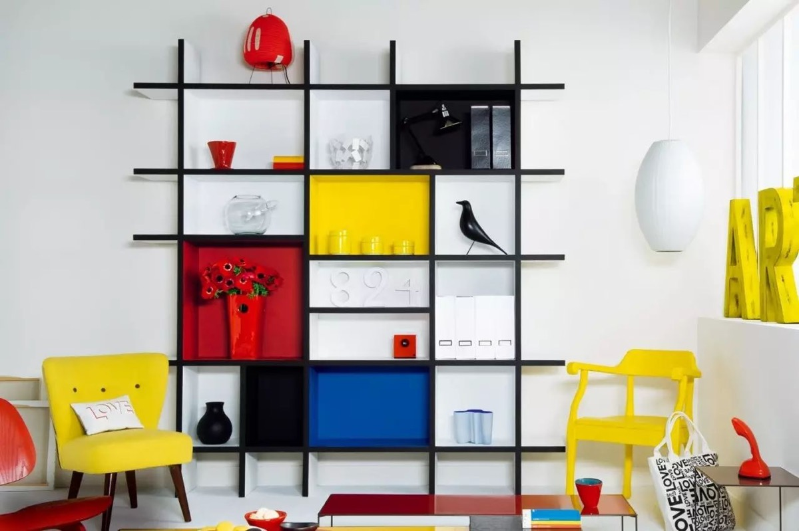
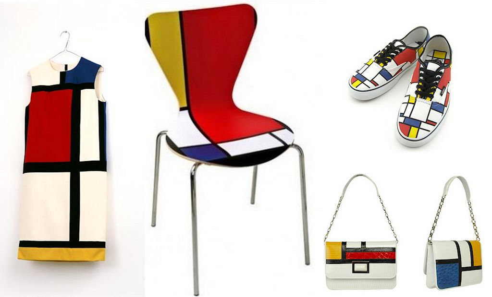
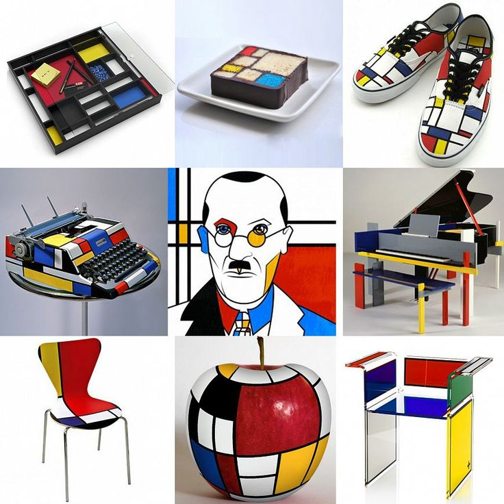
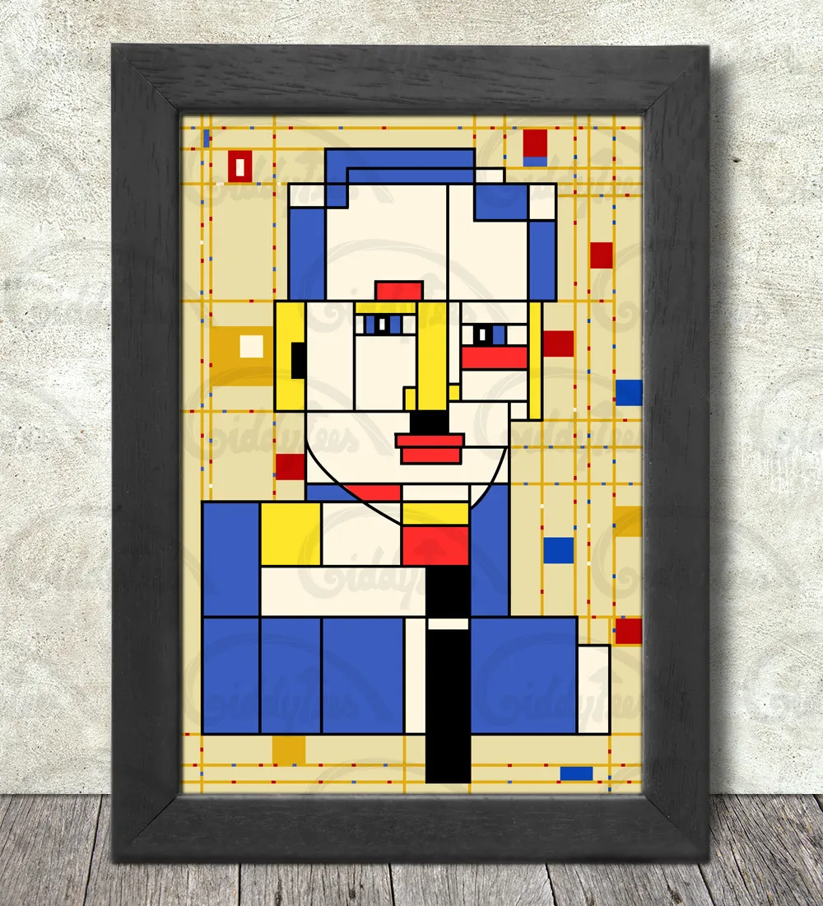
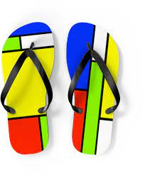
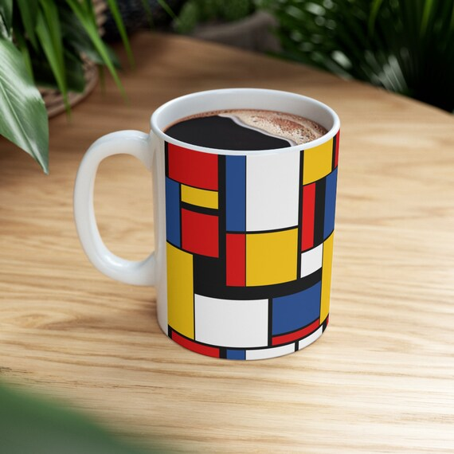
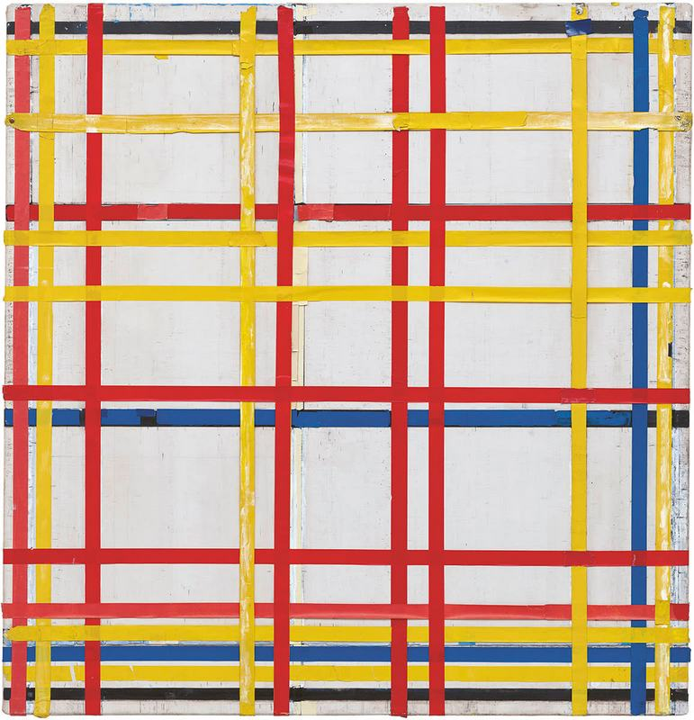
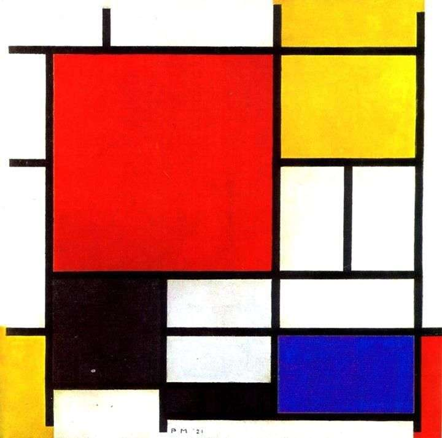
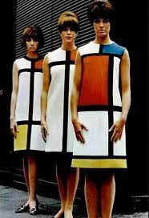

За мотивами Мондріана






HTML and Mondrian
| 1 | 2 | 3 | 4 | |||
| 5 | 6 | 7 | ||||
| 8 | 9 | 10 | ||||
| 11 | 12 | 13 | ||||
| 14 | 15 | 16 | 17 | |||
| 18 | 19 | |||||
| 21 | ||||||
Це цікаво
Пітер Корнеліс Мондріан
Нідерландський художник, один із зачинателів і провідників абстракціонізму в світовому мистецтві Мистецтво Мондріана багато в чому вплинуло на теперішні живопис, архітектуру та дизайн.
1942

75 років догори дриґом
Помилку в розташуванні полотна Піта Мондріана помітила кураторка музею Сюзанна Меєр-Бюзер. Однак перевішувати картину вона не стала, побоюючись за її збереження.
1930

"Композиція червоного, жовтого, синього і чорного"
У даній роботі, яка стала однією з перших в новому напрямку, домінуючий блок червоного кольору врівноважується невеликими блоками інших кольорів.
1965

Вплив на моду
Ів Сен-Лоран представив знамениті сукні «Мондріан» – без коміра і рукавів, з трикотажного полотна, з декором у вигляді «цитат» з картин художника-абстракціоніста.